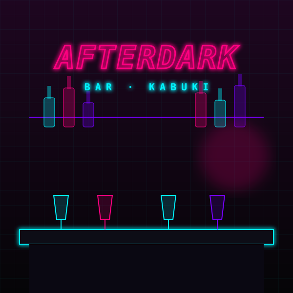

STŘEP KITSUNE · 21:14:07
Bar Afterdark je narvaný. Hudba duní tak nahlas, že ti vibrují implantáty.
V rohu sedí netrunnerka s bílými vlasy a neonovými linkami na víčkách. Mrkne na tvůj odpočet a ušklíbne se.
„Kitsune střep? To dokážu vytáhnout. Jenže můj deck je šrot. Na nový potřebuju eddies.“
